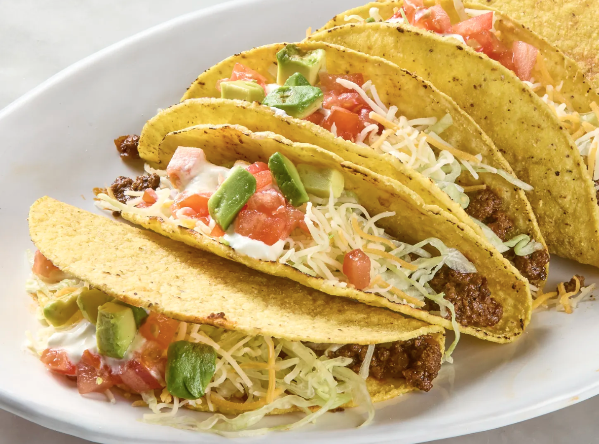

Back

Ingredients
- 1 lb ground beef
- 1 packet taco seasoning
- 1/2 cup water
- 8 taco shells
- 1 cup shredded lettuce
- 1 cup diced tomatoes
- 1 cup shredded cheddar cheese
- 1/2 cup sour cream
- 1/2 cup salsa
Instructions
- In a large skillet, cook ground beef over medium heat until browned. Drain excess fat.
- Add taco seasoning and water to the skillet. Simmer for 5 minutes, stirring occasionally.
- Warm taco shells according to package instructions.
- Fill each taco shell with ground beef mixture. Top with shredded lettuce, diced tomatoes, shredded cheddar cheese, sour cream, and salsa.